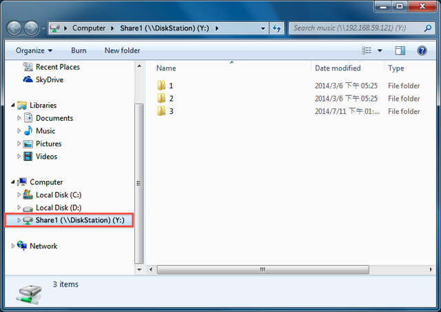

Przegląd
Serwer NAS Synology został zaprojektowany do tego, by zapisywanie i udostępnianie plików w sieci lokalnej było szybkie i proste, umożliwiając bezpośredni dostęp do udostępnionych folderów i plików na serwerze NAS Synology, bez potrzeby ciągłego logowania się na stronie DSM. Na przykład, użytkownik będzie mógł zapisać pliki na serwerze NAS Synology z poziomu aplikacji Eksplorator Windows, tak jak w przypadku innych urządzeń sieciowych.
Mapowanie w aplikacji Eksplorator Windows
- Otwórz okno aplikacji Eksplorator Windows i przejdź do sekcji Komputer.
- Kliknij przycisk Mapuj dysk sieciowy. Ta czynność spowoduje wyświetlenie okna Mapuj dysk sieciowy.
- W oknie Mapuj dysk sieciowy wybierz literę napędu z menu rozwijanego Napęd.
- W polu Folder wprowadź nazwę serwera NAS Synology i udostępnionego folderu, umieszczając przed nią i po niej ukośniki wsteczne. Na przykład jeśli nazwa serwera NAS Synology to „DiskStation”, a nazwa udostępnionego folderu to „Share1”. należy wprowadzić „\\DiskStation\Share1”. Po zakończeniu kliknij przycisk Zakończ.
- Wprowadź nazwę użytkownika DSM i hasło.
- Na zakończenie, wyświetlone zostanie okno aplikacji Eksplorator Windows. Udostępniony folder będzie teraz zmapowany i dostępny w sekcji Komputer. 


Nie można uzyskać dostępu do udostępnionego folderu? Wprowadzone konto użytkownika musi posiadać uprawnienia dostępu do standardowego folderu, do którego użytkownik próbuje uzyskać dostęp.